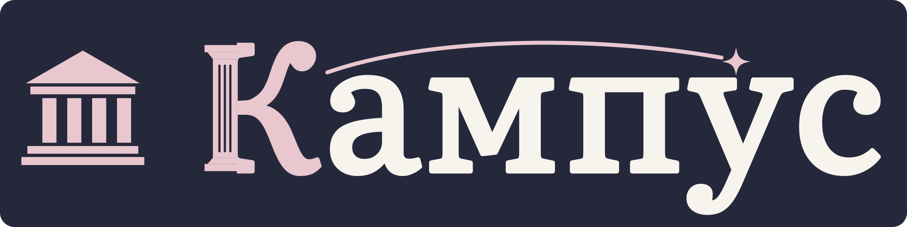

<!doctype html><meta charset="utf-8"><title>Логотип — превью</title>
<style>body{margin:0;font:14px Onest,Arial;background:#F7F4EE;color:#25283B;padding:24px}section{background:#fff;border:1px solid #E4DAD2;border-radius:16px;padding:24px;margin:0 0 16px}h2{font:600 13px Arial;letter-spacing:.08em;text-transform:uppercase;color:#6F6670;margin:0 0 12px}.row{display:flex;gap:24px;align-items:center;flex-wrap:wrap}.dark{background:#25283B}</style>
<section><h2>Полная (вариант B)</h2></section>
<section><h2>Компактная</h2><div class="row"></div></section>
<section><h2>Тёмный фон и одноцветная</h2><div class="row"></div></section>
<section><h2>Знак и favicon в реальном размере</h2><div class="row"></div></section>
